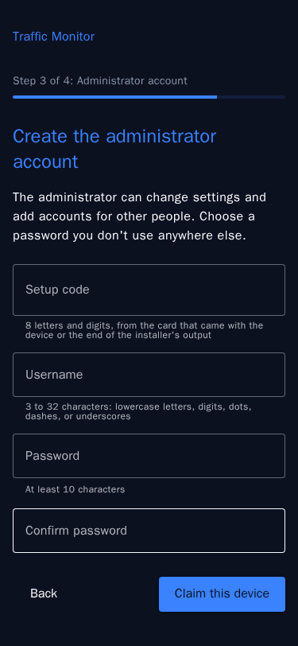

Control app and login¶
Claim a Traffic Monitor with its setup code, log in, add viewer accounts, change passwords, and get back in when the login or the control app fails.
The device's home page is its control app. It holds the device's accounts, and one login there opens the apps your account may use: the dashboards, Frigate, the Node-RED editor, the camera feeds, and Cockpit. These accounts belong to the device. They're separate from the Raspberry Pi user account you created when you imaged the card. That account's password is the system password.
What the login protects
The login keeps people on your network out of the apps. The device uses plain HTTP, so passwords and images cross your network unencrypted. Use the device on a network you trust.
Claim the device¶
A device that has no administrator yet sends every page to setup. That happens on a new device, after an update from a version without the login, and after reset-admin. Setup has four steps: a welcome page, the license agreement, the administrator account, and the system password.
You need the setup code, eight letters and digits written as XXXX-XXXX. It comes from one of two places:
- A pre-built unit: the card that came with the device.
-
A device you installed yourself: the end of the installer's output, in a line like this one:
This device isn't claimed yet. Open http://tm-01.local/ (or its IP address) and enter the setup code ABCD-EFGH to create the administrator account. The code works once.The installer prints the same code on every run until the device is claimed. The installer's log,
~/tmsetup-<date>-<time>.logon the computer that ran it, has the same output. On the device,sudo cat /etc/traffic-monitor/setup-codealso shows the code.
To claim the device:
- Open
http://<device>/. Home page and apps explains how to find the address. - Choose Start setup, read the license agreement, and accept it.
- Enter the setup code, then a username and password for the administrator account. Usernames are 3 to 32 characters: lowercase letters, digits, dots, dashes, and underscores. Passwords are at least 10 characters.
- Choose Claim this device. You're logged in as the administrator.
- Set a new system password, or choose Skip for now.

The code works once. After several wrong codes, setup makes you wait before the next try, a little longer after each wrong code.
When the license agreement changes
An update can bring a new version of the license agreement. Until the administrator accepts it, nobody can open the apps. The administrator sees the new version after logging in. Viewers see Waiting for an administrator until it's accepted.
The system password¶
The system password is the password of the Raspberry Pi user account: the one you log in to Cockpit and SSH with. Setup offers to change it, with a Use the same password as my account checkbox. Skip the step to keep the password the account has. To change it later, use Cockpit's Accounts page, or run passwd over SSH.
Log in¶
Open the home page or any app. Without a session, the device shows its login page, then takes you to the page you asked for. You stay logged in for a week, and using the device keeps the session going. To log out, choose Log out in the menu. Frigate's own Logout also logs you out of the device.
After five wrong passwords in a row, the device makes you wait before the next try: a few seconds at first, and twice as long after each further wrong password, up to 5 minutes. It counts wrong passwords for the account and for the address they come from, so a wait for an account applies on every phone and computer. Sessions that are already logged in keep working. The count clears 15 minutes after the last wrong password, or when the login succeeds.
Administrators and viewers¶
Each device has one administrator, the account created when it was claimed, and any number of viewers.
| App or page | Administrator | Viewer |
|---|---|---|
| Dashboard and Legacy Dashboard | Yes | Yes |
| Downloads on the Data export page | Yes | No |
| Frigate: live view, review, and explore | Yes | Yes |
| Frigate: settings and the configuration editor | Yes | No |
| Node-RED editor, Camera feeds, and Cockpit | Yes | No |
| The Users page | Yes | No |
Add a viewer¶
- Open Users from the menu.
- Under Add a viewer, enter a username and a password, and choose Add viewer.
- Give the person the username and password.
Each viewer's menu on the Users page has Set a new password, which also logs them out everywhere, and Remove.
Change your password¶
Open Account from the menu. Under Change your password, enter your current password and the new one. Every other browser and phone where you were logged in is logged out; this one stays logged in. Wrong current passwords count toward the same wait as wrong logins.
Log out everywhere, on the same page, ends your sessions in every browser and on every phone, including the one you're using. Use it if you logged in on a device that isn't yours.
If you forget a password¶
- A viewer's password: the administrator sets a new one on the Users page.
- The administrator's password: see the next section.
If the administrator's password is lost¶
Someone who can log in to the device with the Raspberry Pi user account can start over. Open a terminal over SSH, or in Cockpit at http://<device>:9090, and run:
sudo tm-control reset-admin
It removes every account, the administrator and all viewers, and prints a new setup code. Then claim the device again with that code. Your data and settings stay as they are.
If the control app is down¶
When the control app doesn't answer, the apps can't check your login. Every app then shows a page that says the control app isn't answering, and the home page says The control app isn't answering. To start it again:
- In a browser, open Cockpit at
http://<device>:9090. It doesn't need the control app. Log in with your Raspberry Pi user account, go to Services, opentm-control.service, and restart it. -
Over SSH, run:
sudo systemctl restart tm-control.service sudo journalctl -u tm-control.service -n 50 # if it stops again, the reason is in its log
An app that's down while the control app works, such as Frigate during a restart, shows a 502 Bad Gateway error instead. System administration covers the services and their logs.